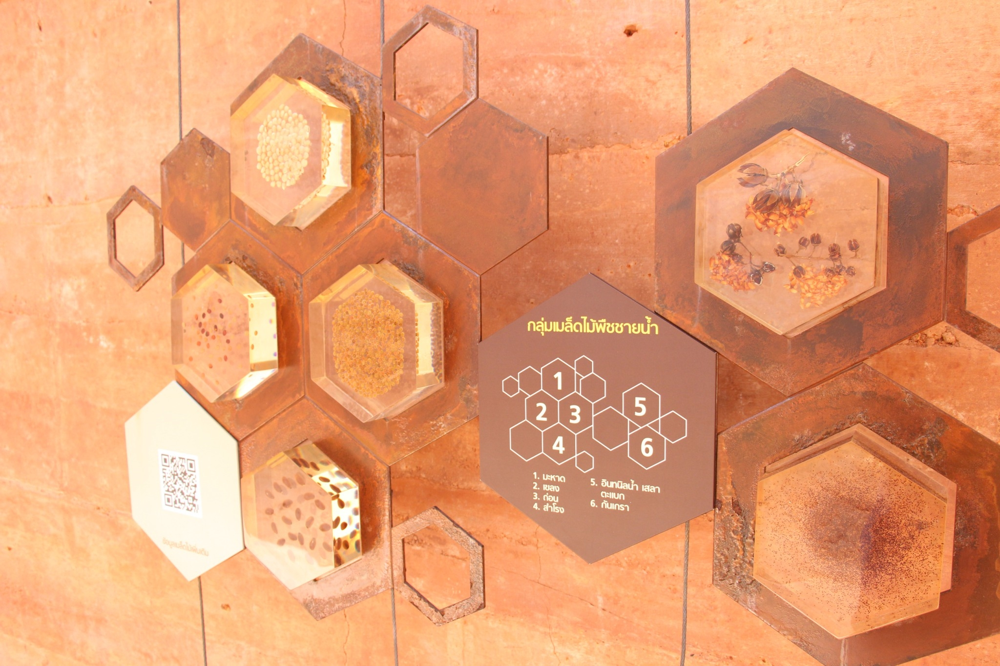
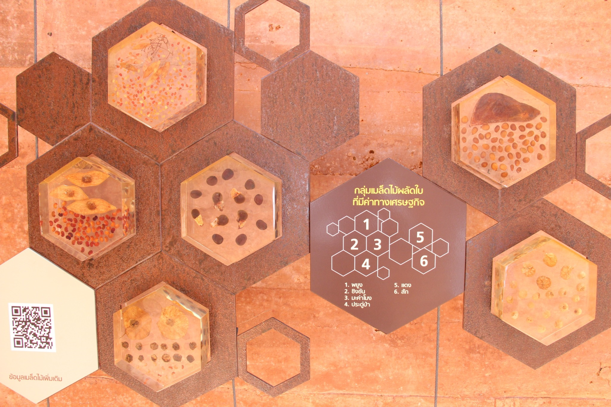

VEGETATION
พืชพรรณดั้งเดิมที่พบได้ที่ป่าในกรุง
พืชพรรณดั้งเดิม
ลำพู
ชื่อวิทยาศาสตร์ : Sonneratia caseolaris
วงศ์ : SONNERATIACEAE
ชื่อสามัญ : Cork Tree
ลักษณะทางพฤกษศาสตร์ : เป็นไม้ยืนต้น
ขึ้นอยู่ชายเลนที่น้ำท่วมถึง มีรากงอกขึ้นเหนือพื้นดิน ลำต้นสูง ๑๐-๒๕ เมตร
ทรงพุ่ม กิ่งก้านห้อยย้อยลง ใบ เดี่ยว ออกตรงข้ามกันเป็นคู่ขนานอย่างน้อย ๕ คู่
กว้าง ๐.๔ -๐.๖ เซนติเมตร ยาว ๐.๕-๑๑ เซนติเมตร รูปมนไข่ ปลายแหลม โคนใบสอบขอบเรียบ
เนื้อหนาสีเขียวเป็นมัน ท้องใบสีอ่อน ดอก ออกเป็นช่อติดก้านสลับใบและปลายกิ่ง บานห่อ ๔-๗ เซนติเมตร
กลีบรองดอกสีเขียวอ่อน กลีบดอกขาวลายสีม่วงแดงเข้ม ปลายแยกแหลมเป็น ๖ กลีบ บาง ร่วงง่าย
เกสรผู้เส้นขาวจำนวนมาก ผล กลมแป้นสีเขียวคล้ายลูกจันทร์ ขยายพันธุ์ด้วยเมล็ด
ประโยชน์ : ไม้ลำพู ต้น ราก ใช้ทำจุกขวด ภาชนะปิดฝาโอ่ง ไห ที่มีคุณค่ามากมาก่อนที่จะเปลี่ยนเป็นวัสดุอื่นแทน
จึงทำให้ต้นลำพูหมดค่าขาดการดูแลขยายพันธุ์ ต้นลำพูยังป้องกันพื้นตลิ่ง กันน้ำเซาะได้ดี และดูดซึมน้ำเสียเป็นน้ำดีด้วย
ตะบูนขาว
ชื่อวิทยาศาสตร์ :Xylocarpus granatum Koenig
ชื่อวงศ์ :MELIACEAE
ชื่ออื่น : กระบูน กระบูนขาว ตะบูน (กลาง, ใต้), หยี่เหร่ (ใต้)
ลักษณะทั่วไป : ไม้ต้นขนาดเล็กถึงขนาดกลาง สูง 8-20 ม. ไม่ผลัด
ใบ ยอดแผ่กว้าง รูปทรงไม่แน่นอน ลำต้นมักคดงอ โคนต้นเป็นพูพอน เปลือกสีเทาอมขาวน้ำตาลแดง
เรียบบาง คล้ายต้นฝรั่งหรือต้นตะแบก รากมีลักษณะแบน แตกสาขามากมายอยู่บนผิวดินและใต้ดิน
การใช้ประโยชน์ เปลือกให้น้ำฝาด ใช้ย้อมผ้า
การใช้ประโยชน์ด้านสมุนไพร เปลือกและผล แก้อหิวาต์ เปลือก และเมล็ดแก้ท้องร่วง แก้บิด และต้มเพื่อชะล้างแผล
ตะบัน
ชื่อวิทยาศาสตร์ : Xylocarpus rumphii (Kostel.) Mabberley
วงศ์ : MELIACEAE
ตะบัน เป็นไม้ยืนต้นขนาดเล็ก-กลาง สูง 5-8 เมตร ผลัดใบแต่ผลิใบใหม่เร็ว เรือนยอดแน่นทึบ แผ่กว้าง
ลำด้น กลมบิดเล็กน้อย คดงอ แตกกิ่งตํ่าใกล้โคนด้น เปลือกสีเทาอมน้ำตาล แตกเป็นร่องตื้นตามความยาวของลำต้น ไม่มีพูพอนและรากหายใจ
เรียงตรงข้ามปลายใบแหลมมน ถึงเรียวแหลม ฐานใบกลมกว้าง ขอบใบเรียบ ใบนุ่ม คล้ายแผ่นหนัง สีเขียว
ดอก ออกเป็นช่อ แบบช่อแยกแขนง ช่อใหญ่ ตามซอกใบและปลายกิ่งประกอบด้วยดอกจำนวนมาก ดอกสีขาวครีม
กลีบเลื้ยง 4 กลีบ กลีบดอก 4 กลีบ ไม่ติดกัน รูปขอบขนานแกมรูปไข่ เกสรเพศผู้สีเหลือง ดอกมีกลิ่นหอม
ผล กลม มีร่อง หรือเป็นพูเล็กน้อย ผลแก่ สีเขียว หรือเขียวอมเหลือง แต่ละผลมี 4-8 เมล็ด ลักษณะโค้งนูนหนึ่งด้าน
เปลือกแข็งแห้งแตก ภายในมีเมล็ดหลายรูปทรงอัดกันแน่นเป็นรูปทรงกลม มีเยื่อบางขาวคั่นระหว่างเมล็ด
ประโยชน์ : ปลูกให้ร่มเงา ริมชายหาด สวยงามมากกว่าสนทะเลใช้เผาทำถ่านที่ให้ความร้อนสูงกว่าไม้ชนิดอื่น
เป็นแหล่งอาศัยของสัตว์น้ำ สัตว์ป่า นำลำต้นมาทำเสาเข็ม ก่อสร้าง
ฝาดเเดง
ชื่อพฤกษศาสตร์: Lumnitzera littorea
วงศ์ :COMBRETACEAE
ลักษณะทางพฤกษศาสตร์ : เป็นไม้ต้นขนาดกลาง - ใหญ่ สูง 10 - 30 เมตร ราก ระบบรากแก้ว หยั่งลึกลงดิน
มีรากพิเศษออกตามลำต้น เป็นรากหายใจรูปคล้ายเข่า ลำต้น เปลือก มีรอยแตกเป็นร่องลึก สีน้ำตาล เปลือกในสีแดงเข้ม หรือ สีส้ม
ใบ ใบเดี่ยว เรียงเวียนรอบกิ่ง หนาแน่นที่ปลายกิ่ง แผ่นใบหนา รูปรีแกมรูปไข่กลับ หรือ รูปไข่กลับแกมรูปขอบขนาน
ฐานใบรูปลิ่ม ขอบใบหยักมน มีต่อมขนาดเล็ก ปลายใบกลม เว้าตื้น ก้านใบสั้น ใบสีเขียวเข้ม ดอก สมบูรณ์เพศ ออกปลายกิ่ง
ช่อกระจะ แต่ละช่อยาว 2 - 5 เซนติเมตร มีดอก 5 - 15 ดอกฐานรองดอกเป็นหลอด แบนด้านข้าง ใต้ส่วนปลายคอดเล็กน้อย
ขอบกลีบมีขน มีใบประดับย่อย 2 ใบ ขนาดเล็ก กลีบดอก 5 กลีบ รูปรีแกมรูปขอบขนาน สีแดง แต่ละกลีบไม่ติดกัน
เกสรเพศผู้ 10 อัน ยาวเป็น สองเท่าของกลีบดอก เกสรเพศเมีย มีรังไข่ใต้วงกลีบ 1 อัน ภายในมี 4 - 5 ห้อง เชื่อมรวมกันเป็นสันออกมา
ก้านเกสรยาว มีเม็ดไข่ 2 - 5 เม็ด ผล รูปกระสวย ป่องตรงกลาง มีสันตามยาวเล็กน้อย ผลแก่สีน้ำตาลแดง
ลักษณะเด่น ดอกสีแดง ดอกออกเป็นกระจุก ที่ปลายยอด และใบค่อนข้างหนาที่ปลายกิ่ง
ประโยชน์ เนื้อไม้ใช้สร้างบ้านเรือน ทำฟืน ทำถ่าน เปลือก นำมาทุบแช่น้ำให้สีฝาด ย้อมผ้า ย้อมจีวรพระสงฆ์
กลุ่มเมล็ดไม้พืชชายน้ำ

มะหาด
เขลง
ถ่อน
สำโรง
อินทนิลน้ำ เสลา ตะเเบก
กันเกรา
กลุ่มเมล็ดไม้ผลัดใบที่มีค่าทางเศรษฐกิจ

พยูง
ชิงชัน
มะค่าโมง
ประดู่ป่า
เเดง
สัก